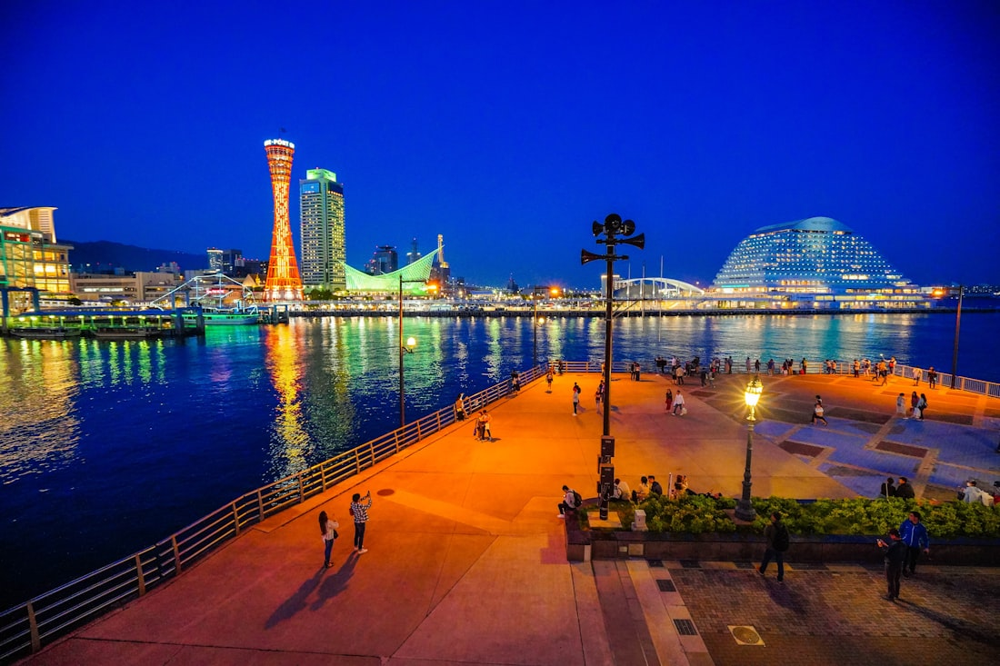
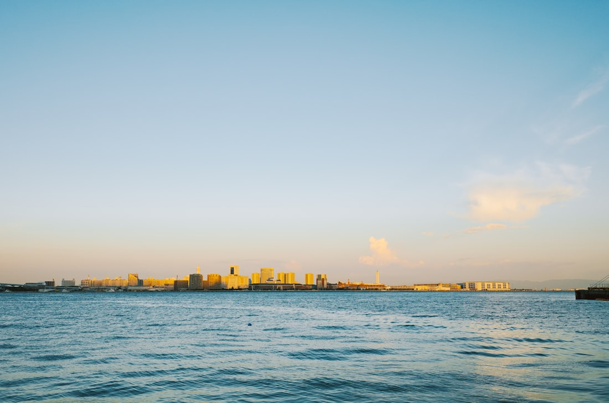
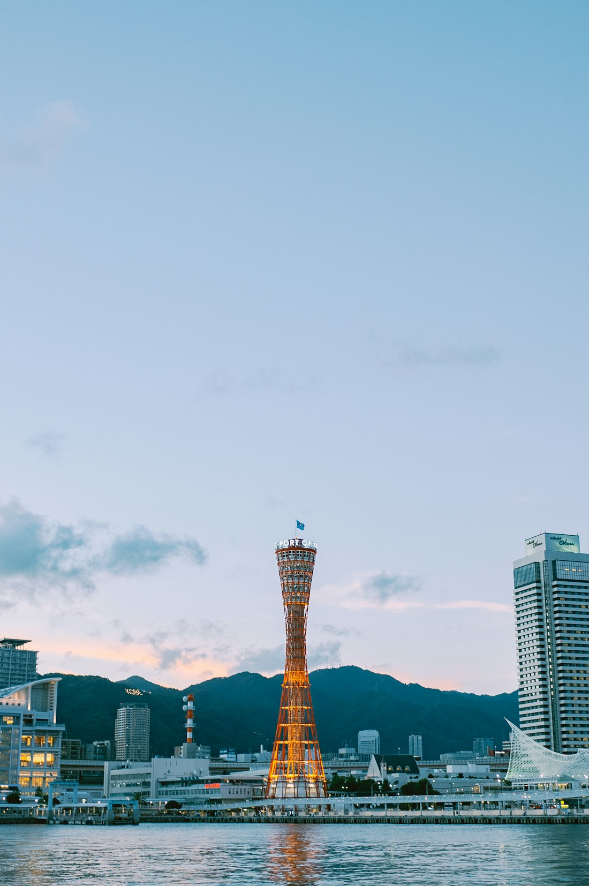
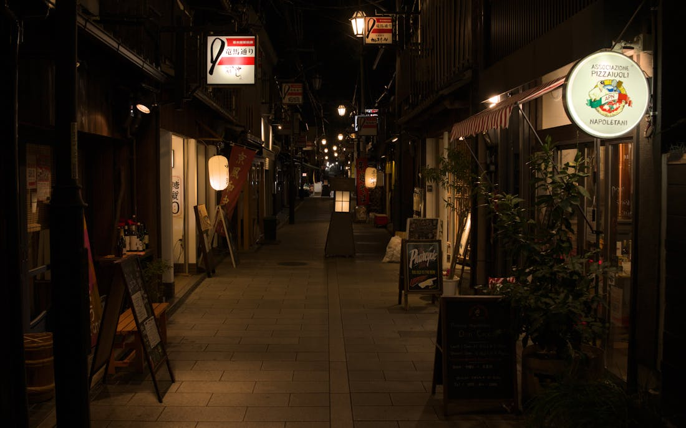
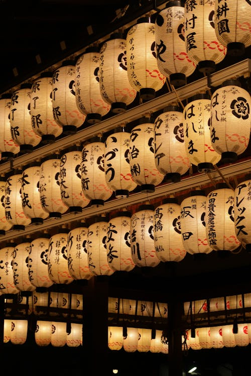
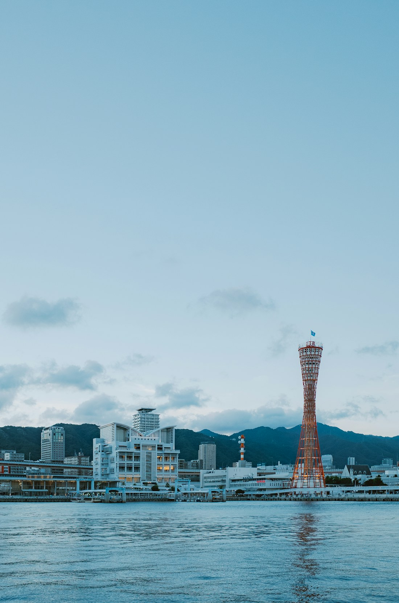
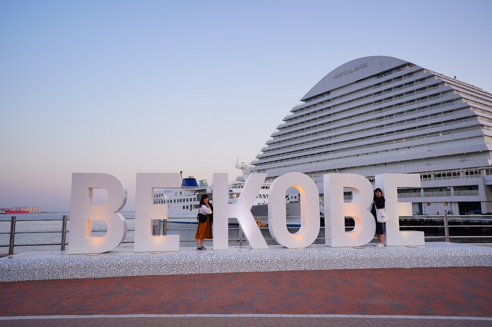
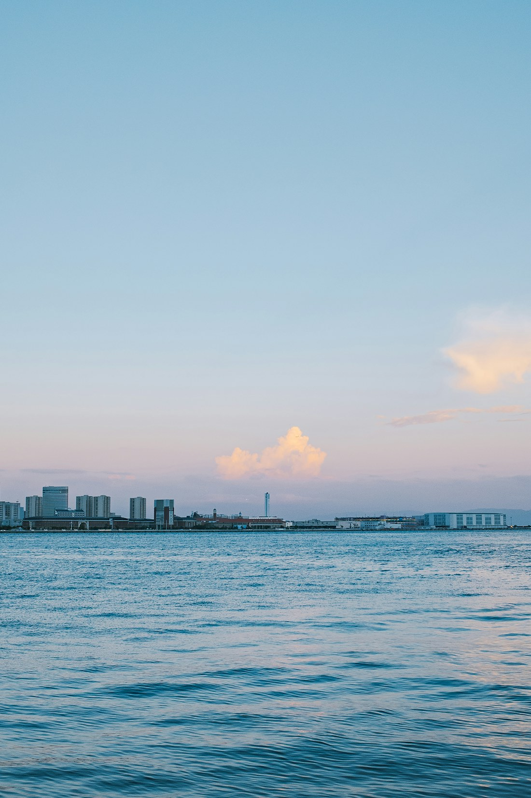

Japan's most cosmopolitan port city — Victorian mansions, the world's finest beef.
Western heritage, Japanese craftsmanship, and the finest beef on earth — all in one city.








Kobe is compact — four completely different worlds within walking distance of each other.
Wagyu counter requires 5-day advance booking — contact early